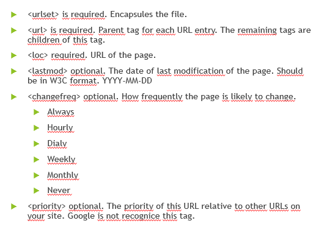

A sitemap is a file with information about pages, videos and other files in our site, and the relationship between them.
Search engines as Google, read this file for track websites in a efficient way
Is not unique. We can create as many sitemaps as we want
We can add our sitemaps files in our robots.txt file
Sitemap file helps in SEO
We have to use XML.
The site map must be encapsulated by <urlset> tags and it can use the following tags
